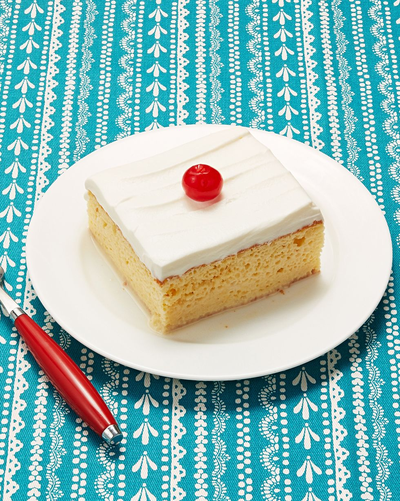

Christina's Tres Leches Cake

Description:
I first made Tres Leches cake when my baby was still a baby and I was
trying to find something yummy to make for my friend Ana for her birthday.
I asked her what her favorite type of cake was.
“Tres Leches,” she said.
“Tres Leches?” I said. “Three milks?” I’d passed high
school Spanish. But I’d never heard of the cake.
Ana went on to explain to me what Tres Leches Cake is: a light, airy
sponge cake soaked with a mixture of three milks: evaporated milk,
sweetened condensed milk, and heavy cream. Yes, you heard me. It’s
absolutely to die for.
To die for.
Look at all of that sweet goodness. And here’s the magical part about this
cake recipe: it's such that no matter how much time passes, it will never
be soggy. It’s a sponge cake, and like a sponge, it’s designed to hold
moisture without falling apart.
It’s a dream.
Ingredients:
For the cake:
- 1 c. all-purpose flour
- 1 1/2 tsp. baking powder
- 1/4 tsp. salt
- 5 whole eggs
- 1 c. sugar, divided
- 1 tsp. vanilla
- 1/3 c. milk
- 1 can evaporated milk
- 1 can sweetened, condensed milk
- 1/4 c. heavy cream
For the icing
- 1 pt. heavy cream, for whipping
- 3 tbsp. sugar
Directions:
-
Preheat oven to 350˚. Spray a 9 x 13 inch pan liberally until coated.
-
Combine flour, baking powder, and salt in a large bowl. Separate eggs.
-
Beat egg yolks with 3/4 cup sugar on high speed until yolks are pale
yellow. Stir in milk and vanilla. Pour egg yolk mixture over the flour
mixture and stir very gently until combined.
-
Beat egg whites on high speed until soft peaks form. With the mixer on,
pour in remaining 1/4 cup sugar and beat until egg whites are stiff but
not dry.
-
Fold egg white mixture into the batter very gently until just combined.
Pour into prepared pan and spread to even out the surface.
-
Bake for 35 to 45 minutes or until a toothpick comes out clean. Turn
cake out onto a rimmed platter and allow to cool.
-
Combine condensed milk, evaporated milk, and heavy cream in a small
pitcher. When cake is cool, pierce the surface with a fork several
times. Slowly drizzle all but about 1 cup of the milk mixture—try to get
as much around the edges of the cake as you can.
-
Allow the cake to absorb the milk mixture for 30 minutes. To ice the
cake, whip 1 pint heavy cream with 3 tablespoons of sugar until thick
and spreadable.
-
Spread over the surface of the cake. Decorate cake with whole or chopped
maraschino cherries. Cut into squares and serve.
Source: The Pioneer Woman